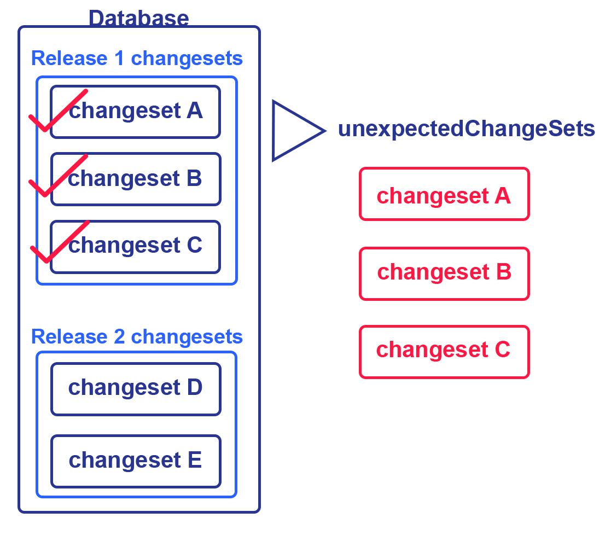

unexpected-changesets
The unexpected-changesets command produces a list of
The unexpected-changesets command is typically used to detect and compare the changes between the unexpected-changesets command will detect those
The unexpected-changesets command also produces all the
The following image shows the release 1 that are already applied to the database but removed from the release 2 that are not applied to the database. Running the unexpected-changesets command will produce the number of release 1.

So, if you want to identifying unexpected unexpected-changesets command.
unexpected-changesets commandTo run the unexpected-changesets command, specify the driver, classpath, and URL in the
Then run the unexpected-changesets command:
liquibase --changelog-file=changelog.xml unexpected-changesetsEnter the name of the changelog.xml. You can also specify the
To see the list of unexpected --verbose flag while running the command:
liquibase --changelog-file=changelog.xml unexpected-changesets --verboseunexpected-changesets global |
|
Definition | Requirement |
|---|---|---|
|
|
The root |
Required |
|
|
The JDBC database connection URL |
Required |
|
|
The database username |
Required |
|
|
The database password |
Required |
When running the unexpected-changesets command with the --verbose flag, the output can be as follows:
Liquibase Version: 4.9.1
Liquibase Community 4.9.1 by Liquibase
1 unexpected changes were found in DBUSER@jdbc:h2:tcp://localhost:9090/mem:dev
liquibase-internal::1652108822075::liquibase
Liquibase command 'unexpected-changesets' was executed successfully.When running the unexpected-changesets command without indicating the --verbose flag, you receive the following output:
Liquibase Version: 4.9.1
Liquibase Community 4.9.1 by Liquibase
1 unexpected changes were found in DBUSER@jdbc:h2:tcp://localhost:9090/mem:dev
Liquibase command 'unexpected-changesets' was executed successfully.